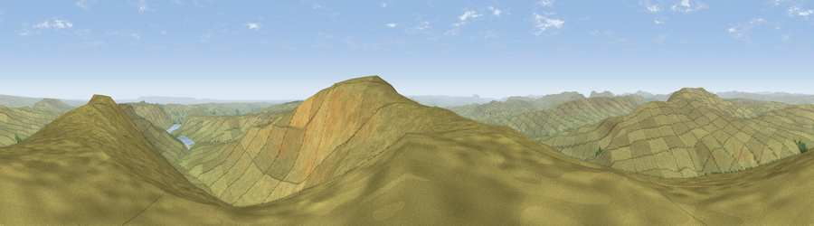

Viewpoint near Kettlewell
#2865 in England · top 1% of its area beats it · near KettlewellWhere it is
The exact computed spot (SD 99925 75525). Click the marker for map links.
The view, rendered

A 360° render of this exact spot computed from the terrain model, tree cover and land cover — summer colours, afternoon light, calibrated against photographs of famous viewpoints. Real trees, hedges and buildings will differ in detail.
The panorama
Grey silhouette: terrain skyline in each direction (720 bearings, Earth curvature and refraction included). Dashed green: skyline with trees (+15 m) and buildings (+8 m) as obstacles. Blue strip: how far the ground is visible on each bearing.
Where the view opens
Wedge length = distance to the farthest visible ground on that bearing (vegetation-aware). Rings at 10, 25 and 50 km.
What fills the view
98% grassland ·
Angular shares of the visible panorama (visual magnitude), not map area. Landscape diversity 0.05 (0–1 Shannon).
Key numbers
More beautiful places nearby
The staircase of upgrades: each row has a higher view potential than everything closer. Driving times are estimates from straight-line distance, calibrated against real road routing — check an actual route before setting out.
| Place | Direction | Drive | Score |
|---|---|---|---|
| Viewpoint near Kettlewell | NE · 1 km | ~2 min | 76.6 |
| Viewpoint near Buckden | NW · 5 km | ~11 min | 77.3 |
| Viewpoint near East Witton | NE · 17 km | ~30 min | 77.8 |
| Little Ingleborough | W · 26 km | ~41 min | 78.8 |
| Viewpoint near Ingleton | W · 26 km | ~42 min | 79.5 |
| Whernside | WNW · 27 km | ~43 min | 79.9 |
| Viewpoint near Kirby Knowle | ENE · 47 km | ~68 min | 80.5 |
| Warton Crag | W · 51 km | ~72 min | 83.2 |
54.17551, -2.00265 · source: screening · position refined by local search. Computed location — check access rights before visiting.